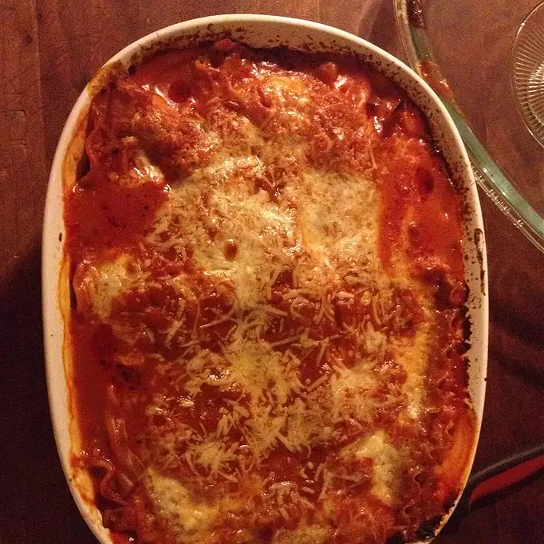

lasagna

Directions
Step 1
- Spread about 1 cup pasta sauce in 2-quart shallow
baking dish (11x7-inch).
- Top with 3 uncooked
noodles, ricotta cheese,
- 1 cup mozzarella cheese,
Parmesan cheese and 1 cup pasta sauce.
- Top with remaining 3 uncooked noodles and
remaining pasta sauce. Cover.
Step 2
- Bake at 375 degrees F for 1 hour
- Uncover and top
with remaining mozzarella cheese.
- Let stand 5
minutes.
Nutrition Facts
Per Serving:
366 calories; protein 22g; carbohydrates 31.1g; fat 16.4g;
cholesterol 49.9mg; sodium 923.6mg.